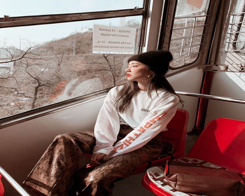
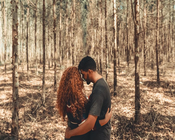
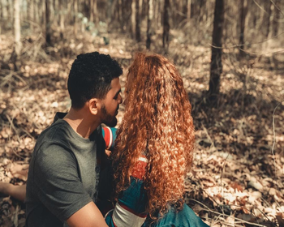
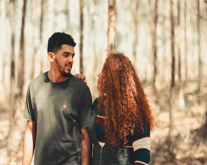
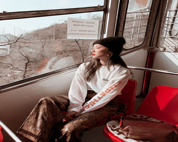
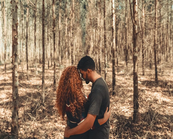
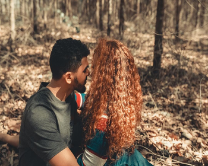
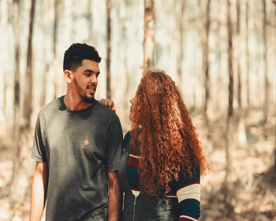
Aquí te proporcionamos unas fotografias de cuando recien empezamos a dedicarnos a realizar la toma de fotografias en los eventos. para aquellas personas que quieren recordar esos momentos inolvidables y que mejor que unas fotografias para un álbum.
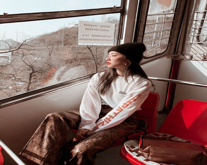
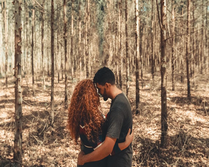
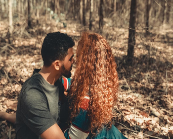
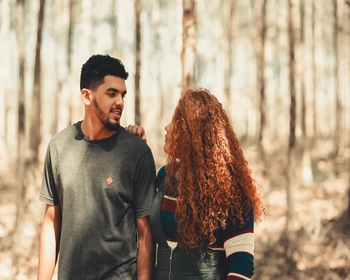